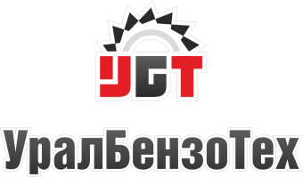

Видео

MITEX 2026 · Россия · Стенд 8D1401
УРАЛБЕНЗОТЕХ, ООО
Карточка проверена 10 ноября 2026, 09:25 · Источник ↗ · Снимок оригинальной карточки ↗
О компании
УРАЛБЕНЗОТЕХ – это компания с многолетним опытом разработки, производства, экспорта и успешной реализации садовой техники и бензоинструмента. Сотрудничество с нами – залог успешного бизнеса. Наша компания работает с 1999 года. Мы специализируемся на производстве мотобуксировщиков, телег, мотоблоков, навесного и прицепного оборудования и садово-парковой техники под брендами Forza и ECO. • Мототехника. • Навесное и прицепное оборудование. • Телеги прицепные мотоблочные. • Электро- и бензо-инструмент. Наши преимущества: Более 100 видов товарных групп, собственных торговых марок «Forza» и «ECO». Продукция в наличии! Собственное производство! 2 производственные базы, площадью 9500 кв. метров. Самое современное оборудование для обработки металла. Площадь складских помещений более 3000 кв. метров. Собственный автопарк. Логистическая сеть в 85 регионов РФ и ближнего зарубежья. Стабильный график доставки собственным транспортом и транспортными компаниями. Надежное сервисное обслуживание. Сеть официальных Сервисных центров. Более 300 человек в команде! Грамотные специалисты – команда профессионалов, заинтересованная в удовлетворении запросов каждого клиента.
Контакты
Сайт: https://uralbenzoteh.ruE-mail: partner@ubt-prm.ruТелефон: +7 (342) 214-00-77social: https://www.youtube.com/@ForzaPermsocial: https://vk.com/uralbenzoteh
Все контактные сведения из карточки
Контакты Адрес: Россия, Пермский край, д. Хмели, Шоссе Космонавтов, д.320 Веб-сайт: https://uralbenzoteh.ru/ E-mail: partner@ubt-prm.ru Телефон: +7 (342) 214-00-77
Все рубрики участника
Mitex - Рубрикатор
- 1. Электроинструмент и расходные материалы
- 2. Садовая техника, инструмент, инвентарь, оборудование, расходные материалы и насосы
Зал
- Зал № 8
Участник выставки
- MITEX
Видео, каталоги и документы
Видео
watch
Открыть у участника ↗Материал компании
Презентация о компании.pdf
Открыть у участника ↗Источник не удалось загрузить при сборе. Проверьте оригинальную ссылку.
Каталог продукции участника
Материалы каталога
О компании
О компании
О компании Вложения Презентация о компании.pdf 12.06.2024 12 9.28 MB
Последние публикации в Telegram
До десяти последних сообщений каждого найденного канала. Оригинал открывается по ссылке.

Прошли испытания новой снегоуборочной приставки Forza — надёжность в условиях зимних нагрузок.
Новинка производства! Гусеничный модуль толкач Forza. Проверка запуска двигателя.
Производство в Пермском крае. УралБензоТех. Сварочный цех.
https://vk.com/video-97298937_456239268

Медиа-публикация. Подробности — в оригинале.
Подвели итоги года на страничке компании в Дзен https://dzen.ru/a/Z4SHC4geZFjMvq0S

МОТОБУКСИРОВЩИКИ FORZA Представляем Вам нашу линейку 2024 года по мотобуксировщикам. ✅ Все модели оснащены чекой безопасности, которая позволяет осуществлять остановку двигателя при необходимости. ✅ Защита…

Нам 25 лет! И мы дарим подарки! В этом году нашему бизнесу исполняется 25 лет. В день рождения принято получать подарки, а мы решили дарить…


В этом году нам исполняется 25 лет! Компания УралБензоТех прошла долгий путь, преодолевая трудности и радуясь успехам. За это время из небольшого предприятия, мы превратились…
На нашем Дзен канале вышла статья в которой мы рассказываем про дополнительное оборудование для мотоблока. Если Вы хотите использовать свой мотоблок максимально эффективно, это статья…